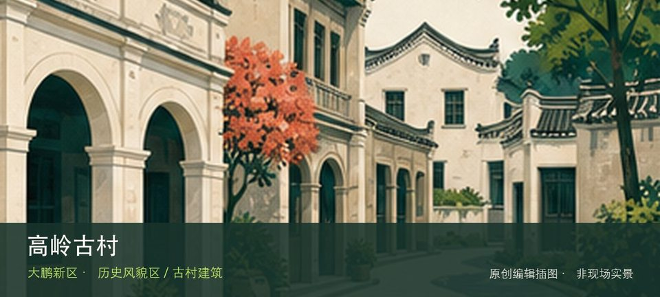

适合谁
适合建筑、地方史和社区观察者；参观时须尊重居民、宗教礼仪与生产秩序。

SHENZHEN GUIDE · 305
南澳街道高岭片区 · 历史风貌区 / 古村建筑
高岭古村位于南澳街道高岭片区，山海之间的传统村落以石屋、旧巷和坡地聚落关系形成不同于沙滩景区的历史景观。这里不是只有一个打卡点：高岭石屋民居提供主要线索，坡地村落格局补足另一层现场关系。阅读这处地点要把高岭石屋民居与坡地村落格局放回仍在使用的街巷或社区中，不把历史空间当成布景。先看公开区域，再按居民生活、礼仪和开放边界调整停留，不进入封闭建筑。
WHY GO
适合建筑、地方史和社区观察者；参观时须尊重居民、宗教礼仪与生产秩序。
到达高岭古村后先确认高岭石屋民居是否可进入，再将坡地村落格局作为可取消的第二站；遇拥挤、暴晒或降雨就提前折返。
公共交通先到南澳街道高岭片区，再以高岭古村公开参观入口为终点；多入口地点须按计划游线选择入口，并预先锁定返程站点。
车辆停在高岭古村外围正规公共停车场后步行进入；不驶入窄巷，不占居民门口、作业区或消防通道。
10 月至次年 4 月步行较舒适；夏季避开正午，雨天留意石板、台阶和老建筑周边湿滑。
NEARBY IDEAS
 授权实景图
授权实景图
坝光银叶树湿地园位于葵涌坝光，古银叶树群、滨海湿地和坝光村落记忆组成珍贵生态空间，树木根系与潮间带都需要保持距离。
 编辑配图·非现场实景
编辑配图·非现场实景
大鹏蓝海人才公园位于坝光片区海心路，约18公顷滨海公园以坝光湾、开阔草地和人才主题公共艺术展现新区产业海岸。
 编辑配图·非现场实景
编辑配图·非现场实景
东山寺位于大鹏所城东侧山坡，寺院建筑、礼佛空间与俯瞰所城的山坡位置构成人文节点，参观重点是礼仪和空间秩序而非打扰宗教活动。